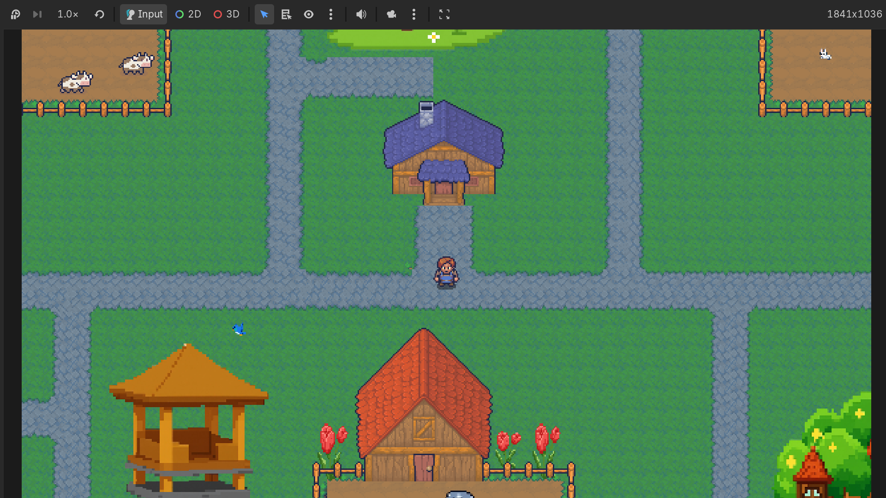

Berikut adala beberapa project sederhana yang pernah saya kerjakan.


Aplikasi permainan edukatif dan interaktif untuk memenuhi tugas UAS satu
kelas saat di semester 2, mata kuliah
Analisis dan Perancangan Sistem Inforamsi yang targetnya adalah
anak SD yang konsepnya berupa petualangan seorang anak yang masuk ke dalam
sebuah buku yang ia baca di perpustakaan sekolah.
Foto diatas merupakan tampilan di dalam gamenya dan karakter gajah
tersebut merupakan salah satu karakter yang saya buat dalam divisi Art
Visual menggunakan pixilart.
.png)
Website sederhana yang berisi salah satu materi matematika diskrit yang
telah dibagikan untuk tiap individu dalam rangka memenuhi UAS mata kuliah
Matematika Diksrit menggunakan Github dan Vercel. Foto diatas
adalah tampilan website yang telah saya buat, Cek laman berikut untuk
melihat repository dan tampilan website lebih lanjut.
(Repository:
Lihat di Github) (Tampilan Website:
disini)
.png)

.png)
Website bisnis sederhana di bidang pariwisata yang dibuat kelompok 1 dalam
rangka memenuhi UAS mata kuliah
Pengantar PSTI di semester 1.
Foto diatas adalah tampilan booking dalam website yang mana kerangka
booking tersebut disusun oleh saya menggunakan canva, kerangka booking
(coklat) yang dimaksud ada di samping tampilan website.
(Laman Website Saung Hibar
disini)
.png)
.png)
.png)
.png)
Website sederhana ini berisi biodata pribadi dalam rangka memenuhi tugas
mata kuliah Pemrograman Internet di semester 3 menggunakan HTML
dan VS Code.
Gambar-gambar diatas adalah tampilan website ini.
| Ringkasan Portofolio Project | |||
| No. | Nama Project | Detail Project | |
| Teknologi | Status | ||
| 1 | Game Mindventure | Pixilart | Selesai |
| 2 | Website Matematika Diskrit | Github dan Vercel | |
| 3 | Website Saung Hibar | Canva | |
| 4 | Personal Website | HTML dan VS Code | Dalam Pengembangan |
Tertarik kerja sama? Ingin berdiskusi? Hubungi disini